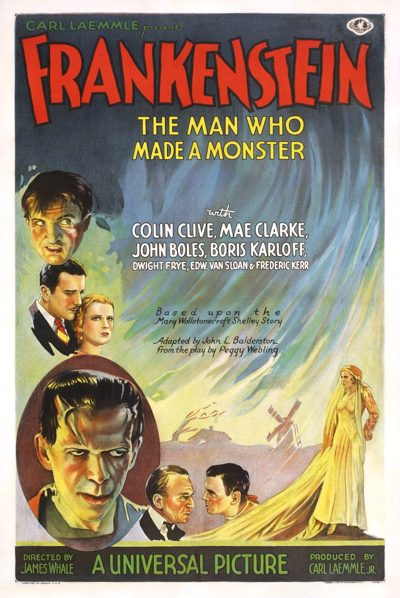

Frankenstein
Starring: Colin Clive, Mae Clarke, John Boles
Director: James Whale
Writer: John L. Balderston, Francis Edward Faragoh, Robert Florey
Producer: Carl Laemmle Jr.
Frankenstein is a 1931 American pre-Code horror film directed by James Whale and produced by Carl Laemmle Jr.. It is adapted from the 1927 play Frankenstein: An Adventure in the Macabre by Peggy Webling, which in turn was based on Mary Shelley's 1818 novel Frankenstein; or, The Modern Prometheus.
Trivia
- Based on Frankenstein; or, The Modern Prometheus (1818 novel by Mary Shelley).
- In 1930, Universal Studios had lost $2.2 million in revenues.
- Within 48 hours of its opening at New York's Roxy Theatre on February 12, 1931, Dracula starring Bela Lugosi had sold 50,000 tickets, building a momentum that culminated in a $700,000 profit, the largest of Universal's 1931 releases.
- Immediately following his success in Dracula, Lugosi had hoped to play Henry Frankenstein in Universal's original film concept.
Previous Showings
6 Runs • 5 Festivals
Original Billings: 1 run (December 27, 1931)
Original Run: December 27, 1931 (Sunday - Tuesday)
All runs on record (6):
- December 27, 1931 (Sunday - Tuesday)Boris Karloff, Colin Clive
- October 27 - 29, 2000Horror Programw/ Phantom of the Opera
- October 26 - 28, 2012UNIVERSAL PICTURES Part 1: 1930-1935w/ Bride of Frankenstein
- April 20 - 22, 2018Hitchcock and Other Masters of Suspense, plus Frankenstein at 200w/ Bride of Frankenstein
- October 12 - 13, 2019UNIVERSAL PICTURES 1931-1935w/ Bride of Frankenstein
- October 14 - 15, 2023Universal Pictures: Horror and Morew/ Bride of Frankenstein